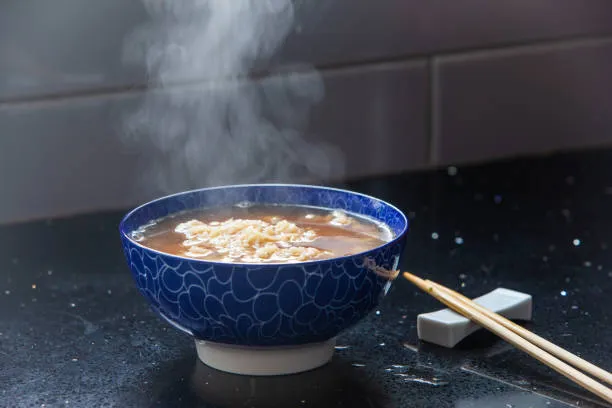

Ramen

Description
Ramen is a noodle dish of Japanese origin that is famous for its umami-rich broth and its perfectly cooked noodles. The recipe described here is for a shoyu ramen.
Ingredients
- 1 tsp sesame oil
- 3 cups stock
- 3 tbsp of soy sauce
- 1 tbsp sake
- 1 tsp sugar
- 1 tsp salt
- 1 tsp ginger
- 1 clove garlic
- 2 packages of chukamen noodles
- green onions
- nori
- black pepper
Steps
- Heat 1 teaspoon sesame oil in a deep pan over medium heat and saute 1 clove garlic until fragrant.
- Lower the heat and add 3 cups stock into the pan. Bring to a boil.
- Add 3 tablespoon soy sauce, 1 teaspoon salt, 1 teaspoon sugar to soup.
- In a separate large pot, bring water to a boil. Add chukamen noodles and cook for 2-3 minutes.
- Use a fine-mesh strainer over a bowl to seperate the soup from the solids.
- Drain the noodles and add to soup.
- Top with green onions, nori, and black pepper to taste.
Home